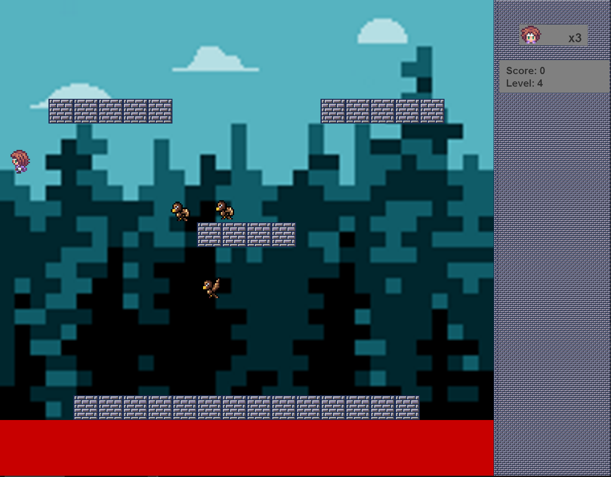
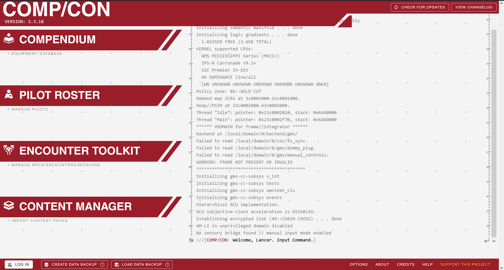
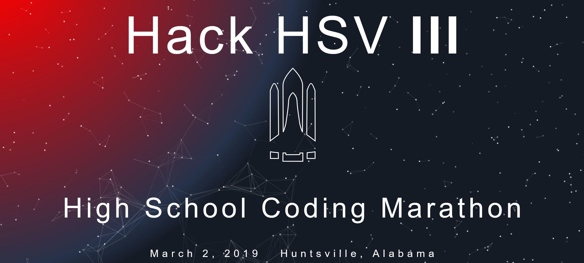
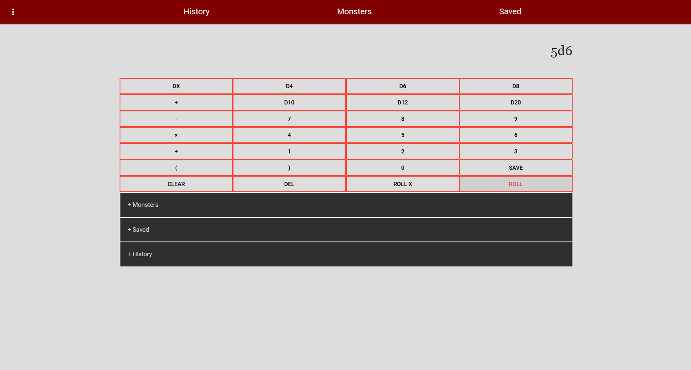
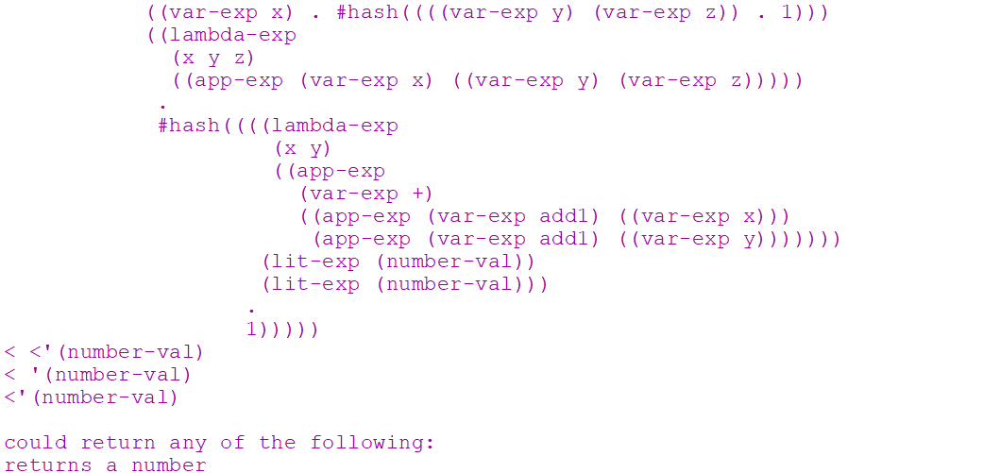
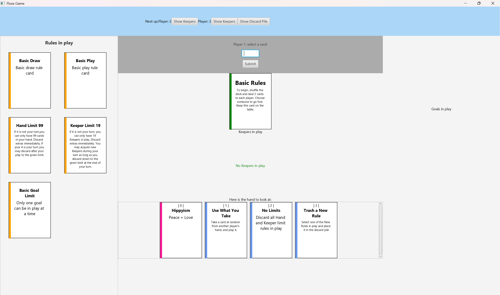
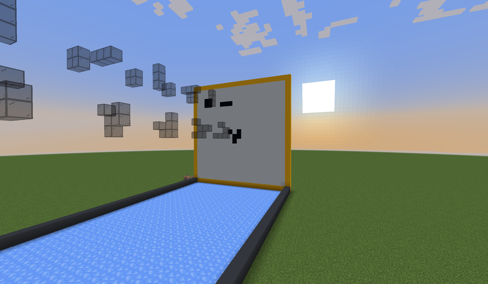
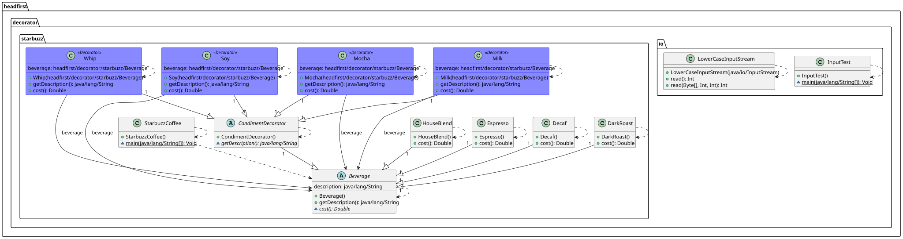

Portfolio
-
Joust arcade game

For one of my classes, I worked in a team of three to create a java based version of the joust arcade game. We utilized an approach where one of us planned ahead, one actively programmed, and the third watched over the sholder of the second giving suggestions on the best way to move forward on the given project.
-
Comp/Con contribution

During the summer between my frehsman and sophmore years, I contributed to an online data manager for one of the tabletop roleplaying games I like, known as LANCER. I mostly helped deal with some issues with hardcoded data, and made it more flexable for both other developers and for homebrewers that create independent content for the game.
-
"Healthbar" creation

During a local 24h hackathon event in my hometown, me and a team of other kids created a heathbar that took actual data from a survey users could fill out and displayed aproxamately how long they had left to live, in years. The idea was that people would make healthier choices if they could see their own healthbar.
-
RPG Dice Roller Webpage

In class during fall 2023, I worked with a partner to develop a RPG dice roller webpage from scratch over the course of half a semester. It allows for users to roll dice of any size, save rolls that they want to have easy access to, and allows them to save the stats of monsters that they want to use in their games.
-
GARP Refactoring

In class during spring 2025, I worked with a team of 4 to refactor an already existing project that one of our team members worked on, the Genetic Algorithm Research Project. This project was both an interesting look at how some of the AI fundementals could be used for basic genetic prediciton, but it was also a wonderful opportunity to learn how to refactor brownfield systems.
-
Racket Static Code Analyzer

During my static code analysis class, I reworked a Racket interpreter that I had made in another class that quarter to create a static code analysis tool for Racket. This tool would take in pre-existing racket code, and analyse it to predict what outputs the function could have, without ever running any of the code itself.
-
Fluxx

In order to learn various quality assurance methods, for one of my projects I was asked to implement the board game Fluxx. this implementation taught me a lot about the various pieces that go into testing, since a large chunk of the code was dedicated to unit and integration tests to ensure that the game could run correctly. I learned how to test well in this course.
-
Minecraft Conway Implementation

As a personal project for my Biology Inspired AI class, I became enamored with Conways game of life and wanted to try and implement the game in minecraft. Instead of a static changing board, I decided to utilize minecraft's 3d nature to display each timestamp as a seperate layer.
-
Java Pattern Linter

In the winter quarter of my junior year, I worked on a Java Linter in a team of four that was intended to not only analyze existing java code and both turn it into a functional UML diagram, but also analyze for both decorator patterns and for singletons. This project was focused on both the patterns we could highlight in the java code, but also was an opportunity to leverage several patterns in the project itself, such as pipes and filters, and a Builder pattern.
-
Racket Interpreter
Over the course of my 2024-25 winter quarter, I worked on a Racket Interpreter that functioned in Racket. In addition, Later in the quarter I worked with a partner to make the interpreter able to interpret itself
-
AI Salary Predictor
As a part of my AI minor, I worked on a machine learning project to predict salaies of various engineer types. This was an interesting project both in terms of data processing and in terms of machine learning algorithms. Firstly, the high outliers for well paid engineers needed to be recognized and removed. Secondly, the variety of processing we attempted included random forest, K-Nearest neighbors, and Support Vector Machine Regression
-
Bio AI Wave
Another research project for my AI minor, I wanted to look at possible AI uses for one of my favorite AI systems, Conway's game of life. I eventually decided to look into the possible applications in wave predictions, since waves would be an interesting take on the cellular automata. This would likely be more interesting as an art piece than a fully analytical tool, but the premise would be completely capable as a simulation for small scale waves on a coast.